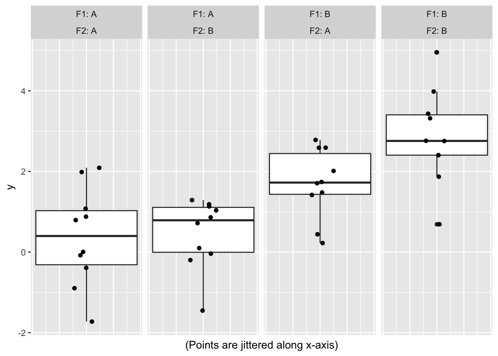

set.seed(2)
library('tidyverse')
library('multcomp')
library('knitr')Two-Way-ANOVA with and without interaction vs. individual t-tests
R
ANOVA vs t-Tests
Introduction
Often, the effect of different interventions is to be studied. This can be done by comparing individual sets of interventions (e. g. drug A vs. placebo and drug B vs. placebo) or in a factorial design (e. g. ANOVA). For individual comparisons statistical tests such as the t-test can be appropriate. Importantly, correction for multiple testing should to be carried out. The effect of combination of several drugs can be studied easily in the factorial design, while it is more complicated via t-tests.
Here, it is studied if ANOVA analysis with subsequent joint testing of the relevant hypotheses offers advantages in terms of required sample size / statistical power in comparison to analysis via separate t-tests for some configurations.
Simulation model
- Normally distributed data
- Two-way factorial design
- Factor
F1with levelsAandB - Factor
F2with levelsAandB
- Factor
- Means:
F1=A,F2=A→ \(\mu = 0\)F1=A,F2=B→ \(\mu = 1\)F1=B,F2=A→ \(\mu = 1\)F1=B,F2=B→ \(\mu = 3\)
- Standard deviation of error:
- \(\sigma = 1\)
- In treatment coding, this corresponds to the coefficient vector \(\beta = (0, 1, 1, 1)^T\)
- 10 individuals per group
Example of simulated data
generate_data <- function(n = 10, beta = c(0, 1, 1, 1)) {
dd <- expand_grid(id = 1:n, F1 = c('A', 'B'), F2 = c('A', 'B'))
X <- model.matrix(~ F1 * F2, data = dd)
dd |> mutate(y = (X %*% beta)[, 1] + rnorm(nrow(dd)))
}
sample_data <- generate_data()
sample_data|>
mutate(x = 0) |>
ggplot(aes(x, y)) +
geom_boxplot() + geom_jitter(width = 0.1, height = 0) +
facet_wrap(vars(F1, F2), labeller = label_both, ncol = 4) +
labs(x = '(Points are jittered along x-axis)') +
theme(axis.text.x=element_blank(),
axis.ticks.x=element_blank())
Interaction plots
# with base R
with(sample_data,
interaction.plot(F1, F2, y))with(sample_data,
interaction.plot(F2, F1, y))# with catstats package
# remotes::install_github("greenwood-stat/catstats")
library('catstats')
intplotarray(y ~ F1 * F2, data = sample_data)Loading required package: yarrrLoading required package: jpegLoading required package: BayesFactorLoading required package: codaLoading required package: Matrix
Attaching package: 'Matrix'The following objects are masked from 'package:tidyr':
expand, pack, unpack************
Welcome to BayesFactor 0.9.12-4.5. If you have questions, please contact Richard Morey (richarddmorey@gmail.com).
Type BFManual() to open the manual.
************Loading required package: circlize========================================
circlize version 0.4.15
CRAN page: https://cran.r-project.org/package=circlize
Github page: https://github.com/jokergoo/circlize
Documentation: https://jokergoo.github.io/circlize_book/book/
If you use it in published research, please cite:
Gu, Z. circlize implements and enhances circular visualization
in R. Bioinformatics 2014.
This message can be suppressed by:
suppressPackageStartupMessages(library(circlize))
========================================yarrr v0.1.5. Citation info at citation('yarrr'). Package guide at yarrr.guide()Email me at Nathaniel.D.Phillips.is@gmail.com
Attaching package: 'yarrr'The following object is masked from 'package:ggplot2':
diamondsLoading required package: mosaicRegistered S3 method overwritten by 'mosaic':
method from
fortify.SpatialPolygonsDataFrame ggplot2
The 'mosaic' package masks several functions from core packages in order to add
additional features. The original behavior of these functions should not be affected by this.
Attaching package: 'mosaic'The following object is masked from 'package:BayesFactor':
compareThe following object is masked from 'package:Matrix':
meanThe following objects are masked from 'package:dplyr':
count, do, tallyThe following object is masked from 'package:purrr':
crossThe following object is masked from 'package:ggplot2':
statThe following objects are masked from 'package:stats':
binom.test, cor, cor.test, cov, fivenum, IQR, median, prop.test,
quantile, sd, t.test, varThe following objects are masked from 'package:base':
max, mean, min, prod, range, sample, sumSimulate many datasets in order to estimate power to test the hypotheses
- For ANOVA analysis the multcomp package is used in order to simultaneously test the hypotheses (correction for multiple testing with respect to the two (without interactgion) or three hypotheses (with interaction) is included by design)
- Calculate p-values testing the main effects (\(\beta_1 = 0\) and \(\beta_2 = 0\)) and the interaction (\(\beta_3 = 0\)) for each of the simulations
- Estimate power empirically
simulate_two_way_ANOVA <- function(include_interaction = FALSE) {
if(include_interaction) {
fm <- lm(y ~ F1 * F2, data = generate_data())
ii <- -1
} else {
fm <- lm(y ~ F1 + F2, data = generate_data(), subset = (F1 == 'A' | F2 == 'A'))
ii <- c(-1, -4)
}
hypotheses_tests <- glht(fm, linfct = paste(names(coef(fm))[ii], '= 0'))
p_values <- summary(hypotheses_tests)$test$pvalues
attributes(p_values) <- NULL
return(p_values)
}Power of ANOVA analysis without interaction
nr_of_sims <- 5e4
tibble(Effect = c('Main effect 1', 'Main effect 2'),
Power = rowSums(replicate(n = nr_of_sims, simulate_two_way_ANOVA()) <
0.05) / nr_of_sims) |>
kable(align = 'c', digits = 3)| Effect | Power |
|---|---|
| Main effect 1 | 0.469 |
| Main effect 2 | 0.469 |
Power of ANOVA analysis with interaction
nr_of_sims <- 5e4
tibble(Effect = c('Main effect 1', 'Main effect 2', 'Interaction'),
Power = rowSums(replicate(n = nr_of_sims,
simulate_two_way_ANOVA(include_interaction = TRUE)) <
0.05) / nr_of_sims) |>
kable(align = 'c', digits = 3)| Effect | Power |
|---|---|
| Main effect 1 | 0.441 |
| Main effect 2 | 0.441 |
| Interaction | 0.218 |
Power of separate t-tests
Bonferroni correction for two tests:
power.t.test(n = 10, delta = 1, sd = 1, sig.level = 0.05 / 2)
Two-sample t test power calculation
n = 10
delta = 1
sd = 1
sig.level = 0.025
power = 0.4360626
alternative = two.sided
NOTE: n is number in *each* groupBonferroni correction for three tests:
- Variance of estimator of interaction effect
- “the variance of a sum of uncorrelated random variables is equal to the sum of their variances” (Source)
- Hypothesis for testing main effects: sum with two terms
\[\begin{align} H_0: \qquad \mu_A - \mu_0 = 0 \qquad (&\iff \beta_1 = 0)\\ H_0: \qquad \mu_B - \mu_0 = 0 \qquad (&\iff \beta_2 = 0) \end{align}\]
- Hypotheses for testing interaction: sum with four terms
\[\begin{align} H_0: \qquad \mu_A + \mu_B - \mu_{AB} - \mu_0 = 0 \qquad (&\iff \beta_3 = 0) \end{align}\]
- Additional formulations of \(H_0\) for interaction effect: \[\begin{align} H_0: \qquad & \mu_A - \mu_0 & + & \mu_B - \mu_0 & = & \mu_{AB} - \mu_0 \\ H_0: \qquad & \beta_1 & + & \beta_2 & = & \beta_1 + \beta_2 + \beta_3 \end{align}\]
- Conclusion: Variance of estimate of interaction effect is twice the variance of the estimate of the main effects
# Main effects:
power.t.test(n = 10, delta = 1, sd = 1, sig.level = 0.05 / 3)
Two-sample t test power calculation
n = 10
delta = 1
sd = 1
sig.level = 0.01666667
power = 0.3690371
alternative = two.sided
NOTE: n is number in *each* group# Interaction effect:
power.t.test(n = 10, delta = 1, sd = sqrt(2), sig.level = 0.05 / 3)
Two-sample t test power calculation
n = 10
delta = 1
sd = 1.414214
sig.level = 0.01666667
power = 0.1746347
alternative = two.sided
NOTE: n is number in *each* groupConclusion
- Power in Two-Way-ANOVA without interaction is slightly greater than power of two separate t-tests corrected with Bonferroni procedure (30 individuals needed in both cases, provided that the control group is ‘recycled’ in the t-test case)
- Model without interaction:
- Power for main effects ANOVA: 0.469
- Power for main effects t-test: 0.436
- Model with interaction:
- Power for main effects ANOVA: 0.441
- Power for main effects t-test: 0.369
- Power for interaction ANOVA: 0.218
- Power for interaction t-test: 0.175
- Model without interaction:
- Power in Two-Way-ANOVA with interaction is approximately equal to power of two separate t-tests corrected with Bonferroni procedure (10 additional individuals needed in order to test interaction)
- Power could be improved without increased total sample size by appropriately increasing the size of the control group (not shown here) - see Friedemann’s document (is in local folder however not uploaded)